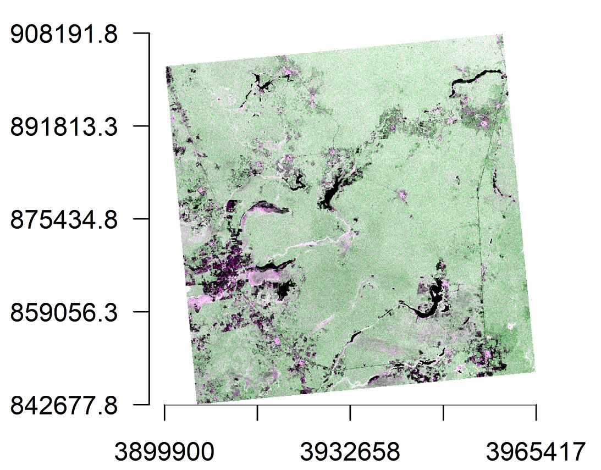
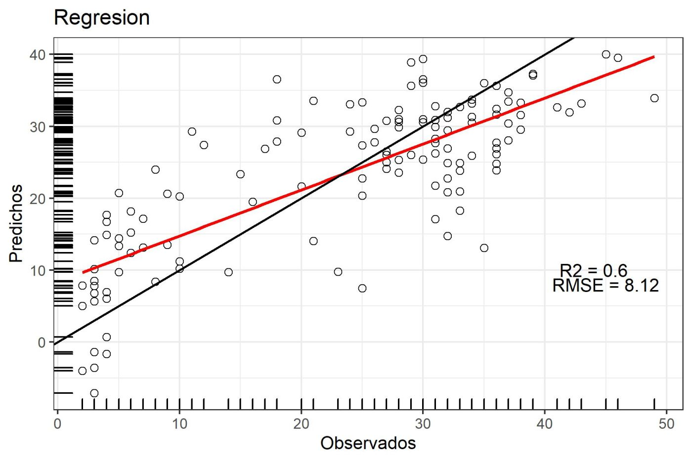

Modelación Espacial con SIG y Percepción Remota
Objetivos:
- Introducir los elementos teóricos para el entendimiento de las funcionalidades y aplicaciones de los SIG
- Desarrollar y entender los principios del procesamiento, despliegue y análisis de imágenes de satélite digitales.
- Proveer las bases teóricas de los SIG y la percepción remota que sirvan como herramientas para la investigación científica dentro del área de recursos naturales.

Profesores:
Celene Espadas Manrique
Gilberto Acosta González
José Luis Hernández Stefanoni
Bioestadística
Objetivos:
- El curso introducirá los aspectos prácticos en la aplicación de diferentes métodos estadísticos y el análisis de datos en problemas de la investigación biológica.
- Se pretende que los estudiantes puedan contar con conocimientos estadísticos suficientes para poder comprender artículos científicos sobre la profesión que desarrollarán al terminar el curso, así como tener las bases para plantear la parte estadística de una investigación científica.
- Para conseguir estos objetivos se dará énfasis en la interpretación y las aplicaciones, minimizando la teoría matemática. Sin embargo, el curso ofrecerá las bases necesarias de manera tal que los estudiantes tengan conocimientos para comprender otros cursos estadísticos.
- El curso pretende adicionalmente que los estudiantes utilicen el lenguaje R en la aplicación de diferentes métodos estadísticos.

Profesores:
Patricia Rivera Pérez
José Luis Hernández Stefanoni